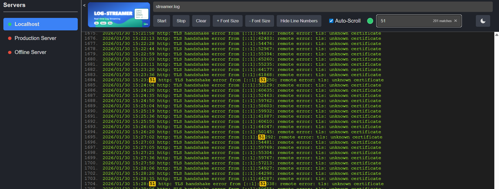

A full-stack tool for streaming, searching, and monitoring log files across multiple servers. Built with Go and React.

Everything you need to monitor and analyze logs across your infrastructure.
Server-Sent Events (SSE) based live log tailing with instant updates as new lines are written.
Connect to multiple backend instances simultaneously with real-time status monitoring for each server.
Advanced text highlighting with a live match counter. Quickly find what matters in thousands of log lines.
JWT authentication, IP whitelist, CORS middleware, and TLS/HTTPS support out of the box.
Toggle between dark and light modes for comfortable viewing in any environment.
Pre-built binaries for Linux, macOS, and Windows. Deploy anywhere with a single command.
Configure servers at runtime via servers.js, CLI flags, or STREAMER_* environment variables.
Font size adjustment, line number toggle, and smart auto-scroll that pauses when you scroll up.
Simple, proven technologies. Minimal dependencies.
Get up and running in under a minute.
A simple REST API for health checks, file listing, and log streaming.
| Endpoint | Method | Description |
|---|---|---|
| /alive | GET | Health check — returns 200 OK |
| /version | GET | Returns version and build date |
| /list-files | GET | Lists available .log files in the configured directory |
| /stream-logs | GET | SSE endpoint for real-time log streaming |
| /stop | POST | Gracefully shutdown the server |
| /restart | POST | Restart the server process |